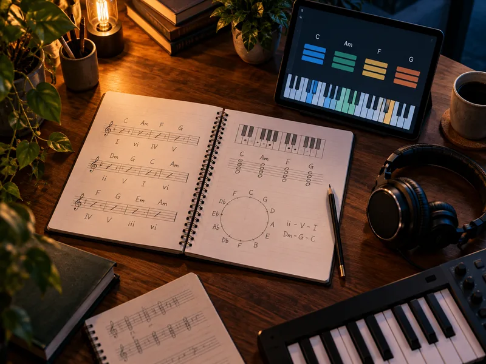
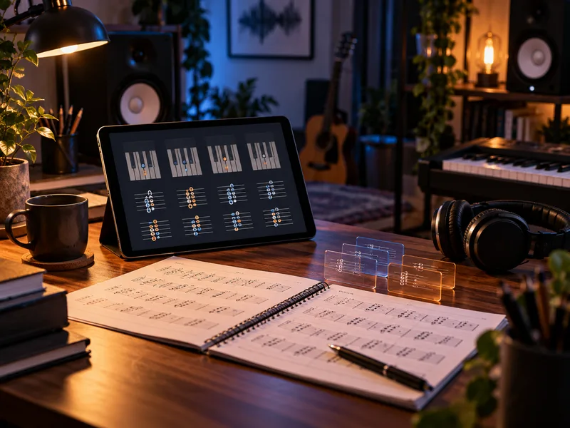
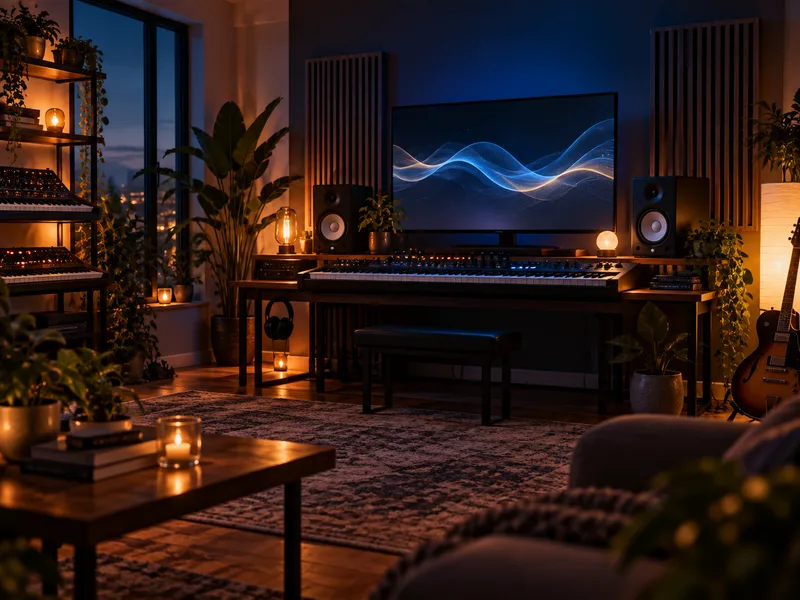
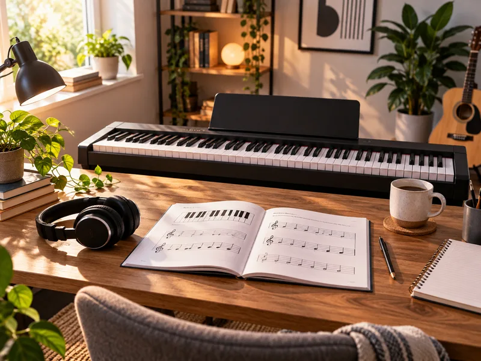
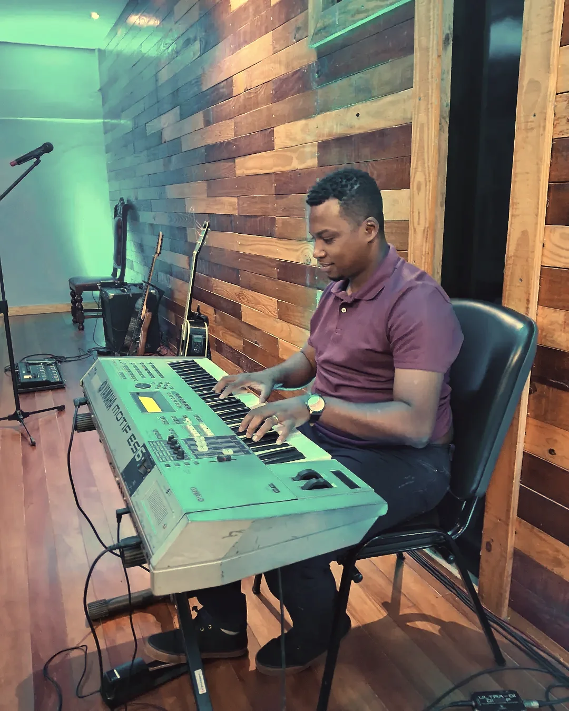

“Em apenas 3 semanas já consegui tirar músicas que achava impossíveis. O método é muito prático e vai direto ao ponto.”
Marcos RibeiroAluno do Tocando de Ouvido
Professor de teclado online
Método prático, na ordem certa, pra você parar de depender de cifra e começar a tocar com liberdade.
Role para descobrir
Se você se reconhece aqui
A maioria dos tecladistas não para por falta de vontade. Para porque aprendeu solto, sem ordem, juntando pedaço de vídeo com pedaço de cifra.
Você decorou posições, mas quando a música muda de tom fica perdido e precisa procurar tudo de novo.
Toca sempre a mesma levada, e por mais que acerte as notas o som continua pobre perto do que você ouve.
Depende de cifra pra tudo. Sem o papel na frente, não consegue tirar nem a música que já escutou mil vezes.
Assiste vídeo solto no YouTube há meses, junta dica com dica, e mesmo assim sente que não saiu do lugar.
Não é falta de talento. É falta de método.
Como funciona
É a mesma sequência que o André usa com os alunos: primeiro a base que sustenta, depois o ouvido, e só então a aplicação em música de verdade.
Acordes, campo harmônico e a lógica por trás de cada escolha. Você entende por que aquele acorde encaixa, em vez de decorar desenho de mão.
Reconhecer intervalo, progressão e ritmo. É a parte que separa quem toca o que está escrito de quem tira sozinho a música que gosta.
Levada, pad, poliacorde e arranjo aplicados em música de verdade, do jeito que você vai precisar tocar no culto, no ensaio ou na gravação.
Experimente
Clica nas teclas e ouça. Simples assim: o primeiro som sai antes de qualquer teoria.
Cursos
Cada curso resolve um problema específico. Se estiver em dúvida, chama no WhatsApp que o André indica o caminho certo pro seu nível.
Quatro módulos para treinar o ouvido, reconhecer progressões e tirar música sem depender de cifra. Com comunidade, lives e certificado.
Os acordes sofisticados que mudam a densidade do seu som, ensinados nos 12 tons e aplicados em música real.
Ebook de 30 páginas com escala pentatônica, progressões de 12 compassos, mão esquerda e improviso com sotaque de blues.

A harmonia explicada pelo lado prático: o que tocar, quando tocar e por quê, sem travar na teoria.
Curso focado no estilo, pra quem já tem base e quer ganhar repertório e sotaque próprio no instrumento.

Timbres prontos pra carregar direto no seu Privia PX-5S e sair tocando com som de produção.

Pads contínuos nos 12 tons pra sustentar o ambiente do começo ao fim, sem corte e sem barulho.

A primeira aula é gratuita. Serve pra você sentir o jeito de ensinar antes de investir em qualquer curso.
No canal
O que sai no canal aparece aqui. Assista direto na página, sem precisar sair e sem perder o que você estava lendo.

Quem ensina
Músico e professor de teclado online. Ensina do zero ao avançado com aula prática, sem enrolação e sem teoria que não vira música. O conteúdo dele acompanha quase 13 mil pessoas somando YouTube e Instagram, e os alunos têm comunidade no WhatsApp e live periódica pra tirar dúvida direto com ele.
Quem já estudou com ele
“Em apenas 3 semanas já consegui tirar músicas que achava impossíveis. O método é muito prático e vai direto ao ponto.”
“Finalmente entendi como funcionam as progressões. Agora consigo acompanhar qualquer música. O curso mudou minha forma de ouvir.”
“Os poliacordes deram uma profundidade incrível às minhas músicas. Meu som no teclado mudou completamente.”
“A comunidade no WhatsApp é fantástica. Sempre tem alguém para ajudar e o instrutor é super presente.”
Perguntas de verdade
Sem resposta pela metade. Se ficar dúvida, chama e pergunta direto.
Não. Tem curso começando do zero absoluto, inclusive a primeira aula gratuita. E se você já toca, dá pra pular direto pro que resolve o seu travamento hoje, como ouvido ou harmonia.
Qualquer teclado de 5 oitavas já serve pra fazer os cursos. Instrumento melhor ajuda no timbre, mas não é o que decide se você vai aprender ou não.
Os cursos são gravados, pra você assistir quando der e repetir quantas vezes precisar. Além disso tem live periódica com o André e comunidade no WhatsApp pra tirar dúvida no meio do caminho.
O acesso é vitalício nos cursos completos. Você compra uma vez e volta ao conteúdo sempre que precisar, inclusive nas atualizações.
Tem garantia de 7 dias. Você entra, assiste, e se achar que não é pra você é só pedir o reembolso dentro do prazo, sem discussão.
Depende do quanto você pratica, mas o método é montado pra você tocar algo já nas primeiras aulas, em vez de passar semanas só na teoria antes de encostar no instrumento.
Próximo passo
Se você não sabe qual curso serve pro seu nível, manda mensagem. O André responde, entende onde você está travado e indica por onde começar, sem empurrar curso que não faz sentido pra você.